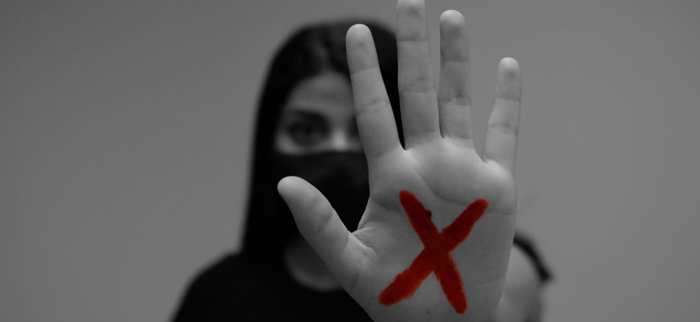

Identificando os obstáculos que silenciam vítimas e mapeando a rede de apoio para promover acesso à justiça na capital rondoniense.

Contatos de emergência, atendimento especializado e canais de denúncia disponíveis para mulheres em situação de violência.
| WhatsApp · Polícia Civil | (69) 98439-0102 |
| WhatsApp · Central Nacional | +55 61 9610-0180 |
| WhatsApp · Ouvidoria MPE-RO | (69) 999 770 180 |
| WhatsApp · CREAS Mulher PVH | (69) 8473-4725 |
| Central MPU | (69) 98485-9602 |
| Plantão Social · CREAS | (69) 98473-5966 |
| Plantão Criminal · MP | (69) 99970-7656 |
| Juizado de Violência Doméstica | (69) 3309-7107 |
| Promotoria Feminicídio | (69) 99945-8442 |
| Promotoria Violência Doméstica | (69) 99964-7292 |
| Sala Lilás · MP | (69) 98408-9931 |
| Central · Programa Mulher Protegida | (69) 99953-1206 |
| Patrulha Maria da Penha | (69) 9921-3580 |
| Rede Lilás PVH · e-mail | redelillaspvh@gmail.com |